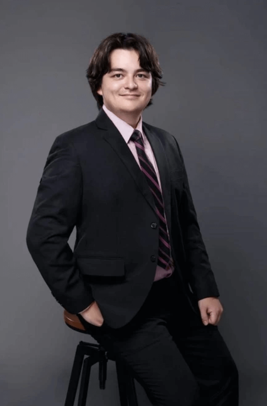
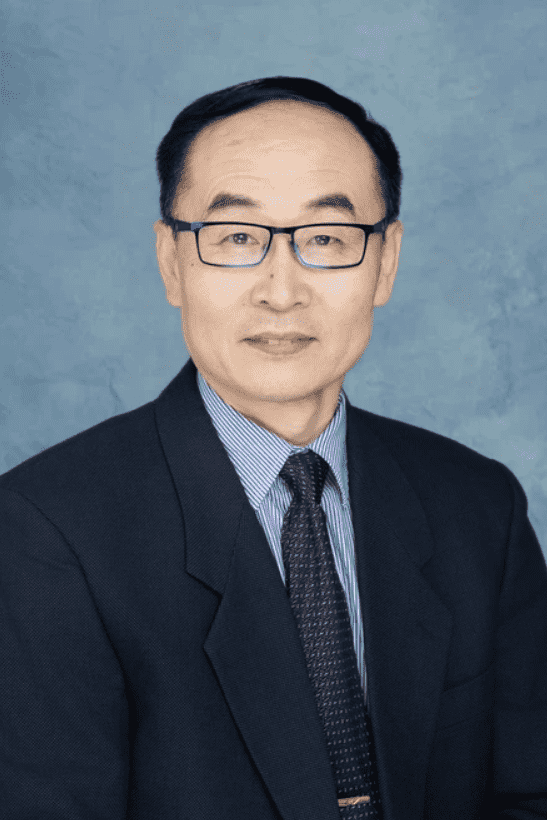

Our Teachers
我们的教师队伍
CQSS has a team of experienced teachers with diversified educational backgrounds. The average teaching experience of foreign teachers is 18 years +, and more than half of them have master's degrees. They not only have solid subject knowledge, but also have rich educational experience and teaching skills, which can help students fully explore their potential and achieve their personal goals.
中加班拥有一支经验丰富、教育背景多元化的教师团队，外方教师平均教龄18年+，一半以上拥有硕士学位。 他们不仅具备扎实的学科知识，还具备丰富的教育经验和教学技巧， 能够帮助学生充分发掘自身潜力，实现个人目标。
 >
Principal 校长
Mr. Hampton
Mr. Hampton is from Harrison Hot Springs, British Columbia, four hours away from Vancouver. He has a degree in Physics from the UBCO and completed his teaching training there. He has been teaching in China for eight years, teaching Math, Physics, Calculus, and even Biology and PE. He is now the principal of Canada Qingdao Secondary School, but will still be teaching Physics 11, 12, and CLC. Outside of work, he likes to walk his dog, go for bike rides, and go scuba diving when he can.Mr.Hampton 来自不列颠哥伦比亚省，拥有不列颠哥伦比亚大学物理学学位，并在该校完成了教学培训。 他在中国任教八年，教授数学、物理、微积分，甚至生物和体育。 他现在担任CQSS校长，但仍将教授物理 11、12 和 CLC。 工作之余，他喜欢遛狗、骑自行车，有空时还喜欢潜水。
Vice Principal 副校长
Mr. Troy
Mr. Troy started to work at CQSS from 2014, and this will be his ninth year of working here. He taught mainly grade 10 courses last year, and he will be teaching Ell 10 in the first semester. He likes reading and jogging, and he especially enjoys playing sports, such as basketball and badminton with students when he has time in the afternoon. He hopes all the students can enjoy their 3 years’ life and study here.Welcome to CQSS!
Mr.Troy 从2014年开始在CQSS工作，今年将是他在这里工作的第十年。 去年他主要教授10年级的课程，在这个学期他将教授Ell 10。 他喜欢阅读和慢跑，尤其喜欢运动；当他在下午有空时，他特别喜欢和学生们一起打篮球和羽毛球。 他希望同学们都能在这里享受三年的学习和生活。
欢迎来到CQSS！

Mr. Frank Bian
Mr. Bian, from Canada, holds a Master's degree from the University of Waterloo and brings over ten years of teaching experience from both Canada and China. Specializing in mathematics and science, he will teach math, calculus, and chemistry this year.In his free time, he enjoys hiking, sports, and music. Mr. Bian is a firm believer in perseverance and curiosity as keys to learning, encouraging his students to persist and ask questions in their educational journey.
Mr.Bian 来自加拿大， 拥有滑铁卢大学硕士学位，在加拿大和中国都有十多年的教学经验。 他擅长数学和科学，今年将教授数学、微积分和化学。 业余时间，他喜欢远足、运动和音乐。 Mr.Bian 坚信毅力和好奇心是学习的关键、 他鼓励学生在学习过程中坚持不懈、勇于提问。

Mr. Jeawon
Mr. Jeawon is from South Africa. He has been a BC teacher since 2019, specializing in science courses. He will be teaching Science 10, Chemistry 11/12 and Biology 11/12 in this academic year. Before becoming a teacher, he worked as a Medical doctor in South Africa focusing on Surgery. He got his Master’s degree in Clinical Dermatology through the University of South Wales recently.He sees himself as a relentless problem-solver and always looking for a new challenge. In his free time, he enjoys hiking, going to the gym and painting.
Mr.Jeawon 来自南非。他从 2019 年开始担任 BC 教师，专门教授科学课程。 本学年，他将教授科学 10、化学 11/12 和生物 11/12。 在成为教师之前，他曾在南非担任医生，主要负责外科手术。 目前，他已取得了南威尔士大学的临床皮肤病学硕士学位。
他认为自己是一个不懈的问题解决者，总是在寻求新的挑战。 闲暇时，他喜欢徒步旅行、健身和绘画。
Mrs. Reynecke
Mrs. Reynecke, a passionate educator from South Africa, has dedicated over twenty years to the teaching profession. She is currently an English Literature teacher in CQSS. Beyond teaching, she enjoys walking, reading, Sudoku, and puzzles.Believing strongly in the transformative power of education, Mrs. Reynecke has seen how knowledge can change lives. She advises her students, "Learning is the key to opportunities. The more you learn, the richer your rewards. Education is a journey of endless possibilities. Embrace it with openness and curiosity." Her dedication and enthusiasm for teaching make her an inspirational figure in her students' learning journey.
来自南非的 Mrs.Reynecke 是一位充满热情的教育工作者，从事教育工作已有二十多年。 她目前是中加项目的英语文学教师。教学之余，她喜欢散步、阅读、数独和拼图。 Mrs.Reynecke 坚信教育的变革力量，她见证了知识是如何改变生活的。 她建议学生："学习是获得机会的关键。学得越多，收获就越丰富。教育是一个充满无限可能的旅程。以开放的态度和好奇心去拥抱它吧。" 她对教学的执着和热情使她成为学生学习旅程中的启蒙者。

Mr. Reynecke
Mr. Reynecke, with over 30 years of teaching experience from South Africa, offers his Sino-Canadian program students valuable life and learning advice. He urges students to stay curious about the world and embrace continuous learning to thrive in an ever-changing environment. He views failures as stepping stones to success, emphasizing that challenges shape character and should be embraced to overcome and reach greater heights. Mr. Reynecke believes his guidance is a gift to his ambitious students, hoping it will lead them forward in their educational pursuits. He is committed to supporting each student's journey to become better versions of themselves through exploration, learning, and growth.来自南非的 Mr.Reynecke 拥有 30 多年的教学经验、 为中加项目的学生提供了宝贵的生活和学习建议。 他敦促学生对世界保持好奇心，不断学习，在瞬息万变的环境中茁壮成长。 他将失败视为成功的垫脚石、 他强调，挑战能塑造性格，应勇于接受挑战，克服困难，勇攀高峰。 Mr.Reyneck认为，他的指导是送给雄心勃勃的学生的礼物、 希望他的指导能引领学生在求学的道路上不断前进。 他致力于支持每个学生通过探索、学习和成长，成为更好的自己。

Ms. Babkova
Ms. Babkova from Russia has five years of teaching experience in humanities and social sciences. She embarked on her teaching journey in China in 2017 and further expanded her impact by volunteering remotely for UN projects in Mexico and Tajikistan starting in 2022. By February 2024, she joined the CSEEC BC program, teaching Sociology and Human Geography. Renowned for her dedication and nurturing approach, Ms. Babkova is not just a teacher but also a mentor and friend to her students, emphasizing high-quality education and personal development. Her wide range of interests, including travel, dance, movies, and reading, enriches her teaching, providing a well-rounded educational experience.来自俄罗斯的Ms. Babkova拥有五年的人文社会科学教学经验， 她于 2017 年开始了在中国的教学之旅。 从 2022 年开始，她在墨西哥和塔吉克斯坦的联合国项目中担任志愿者， 2024 年 2 月，她加入 CSEEC BC 项目，教授社会学和人文地理学。 Ms. Babkova不仅是一名教师，还是学生的良师益友、 她强调高质量的教育和个人发展。 她的兴趣广泛，包括旅游、舞蹈、电影和阅读，这丰富了她的教学内容，为学生提供了全面的教育体验。
Mr. Bray
Mr. Bray hails from Sudbury, Ontario, Canada, and holds a Master's degree in Political Economy. With 21 years of teaching experience under his belt, including 5 years at the high school level and 11 years at the university level, Mr. Bray has dedicated a significant portion of his life to education. A world traveler at heart, he has a passion for exploring new places and learning new things. Mr. Bray encourages all his students to work hard, continually improve their academic and personal skills, and aim for the ultimate goal of securing offers from their dream universities. His approach to teaching is not just about imparting knowledge; it's about inspiring growth and ambition in his students.Mr. Bray来自加拿大安大略省萨德伯里，拥有政治经济学硕士学位。 他拥有 21 年的教学经验，其中包括 5 年的高中教学经验和 11 年的大学教学经验、 作为一名世界旅行者，他热衷于探索新地方和学习新事物。 Mr. Bray鼓励所有学生努力学习，不断提高自己的学术和个人能力、 并以获得理想大学的录取通知书为最终目标。 他的教学方法不仅仅是传授知识，更重要的是激发学生的成长和进取心。